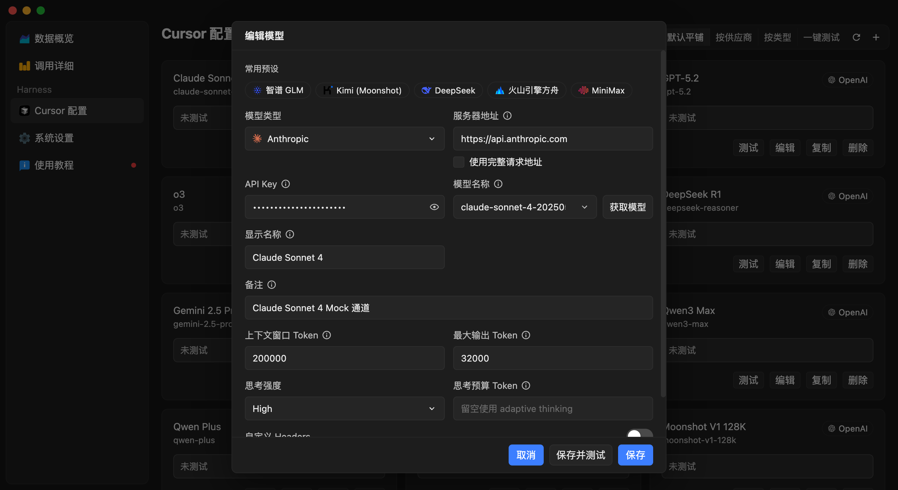

模型配置
配置模型协议、服务地址、凭据与生成参数。每个模型配置都是一个独立的上游通道。

推荐先点常用预设中的 青云聚汇。OpenAI 与 Anthropic 协议都可使用
https://api.qinggekeji.top，然后在 青云聚汇控制台 获取 API Key。如何选择类型与协议
| 模型系列 | 模型类型 | 请求协议 |
|---|---|---|
| Claude 系列 | Anthropic | Messages API |
| GPT / OpenAI 系列 | OpenAI | Responses API |
| 其他所有模型 | OpenAI | Chat Completions API |
GPT 系列务必用 Responses API。走 Chat Completions 会丢失提示词缓存，速度和费用都会明显变差。
必填字段
模型类型
- OpenAI：支持 Responses API 和 Chat Completions API。
- Anthropic：支持 Messages API 兼容服务。
请求协议
OpenAI 类型需要继续选择 Responses API 或 Chat Completions API。该选项决定请求和响应格式，不会单独改变你填写的服务地址。
服务器地址
可以填写服务商的基础地址，也可以选择使用完整请求 URL。使用基础地址时，应用会根据协议追加标准端点路径；使用完整请求 URL 时会原样使用该地址。优先使用界面中的常用服务商预设。
API Key
填写上游服务要求的访问密钥。密钥保存在本机，用于发送模型请求。
模型名称
填写服务商接口接受的模型标识。你也可以点击 获取模型 读取接口返回的模型列表。
展示信息
- 显示名称：Cursor 模型列表中看到的名称，不会改变发送给上游的模型标识。
- 备注：显示在 Cursor 的模型说明中。
可选参数
按模型能力填写上下文窗口 Token、最大输出 Token、推理强度或思考强度、自定义 Headers，以及 OpenAI 或 Anthropic 额外参数。自定义 Headers 和额外参数必须是 JSON 对象，只添加服务商明确支持的字段。
测试配置
保存后运行 测试。结果会显示首字延迟、生成速度、总耗时和模型输出，用于确认地址、协议、API Key、模型标识和流式响应都正常。测试通过后再前往 Cursor 使用该模型。